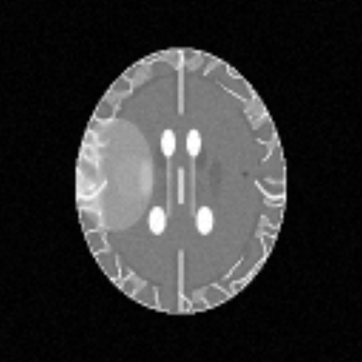
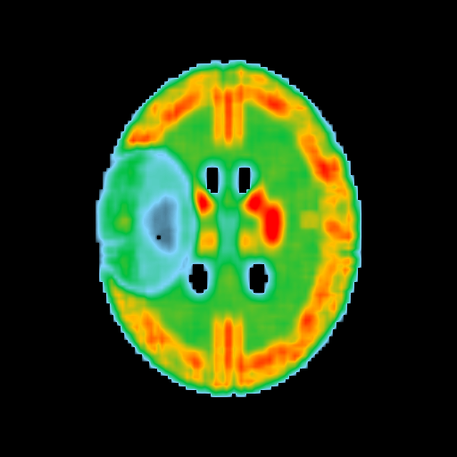

DSC Neuro Perfusion
Demonstration site · NeuroradiologyAnalysis 2026-11-22 14:05
NeuroMR-PRO 1.0.0-dev
NeuroMR-PRO 1.0.0-dev
- Patient
- PHANTOM^SYNTHETIC
- Patient ID
- NMR-PHANTOM-001
- Sex · birth date
- O · 1970-01-01
- Accession
- PHANTOM0001
- Study date
- 2026-01-01
- Modality
- MR · 3.0 T
- Referring
- —
- Reported by
- dr.neuro
Key images · slice 4/8

![relCBV [ml/100 g] · Stroke 0–8](../assets/img/dsc_relcbv.png)

Region parameters
| ROI | relCBV [ml/100 g] | relCBF [ml/100 g/min] | MTT [s] | TTP [s] | T0 [s] |
|---|---|---|---|---|---|
| ROI1 | 2.80 | 22.7 | 12.14 | 28.5 | 22.5 |
| ROI1-mirror | 3.44 | 46.6 | 7.14 | 19.5 | 15.0 |
| ROI2 | 2.68 | 36.2 | 7.31 | 19.5 | 15.0 |
| ROI1 / mirror | 0.81 | 0.49 | 1.70 |
Concentration-time curves
Method
Model-free analysis of ΔR2*(t) from DSC perf SNR50 (60 dynamics, TR 1.5 s, TE 30 ms); automatic AIF; no spatial or temporal smoothing. Perfusion values depend on acquisition and method; compare follow-ups with the same method.
PHANTOM^SYNTHETIC · NMR-PHANTOM-001 · 2026-01-01Default settings · page 1 of 1